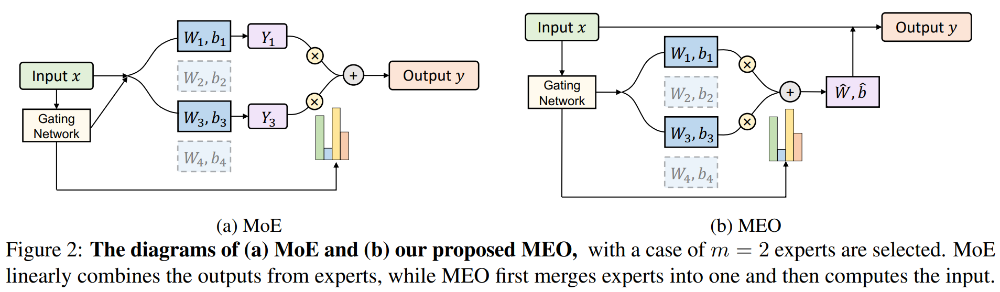
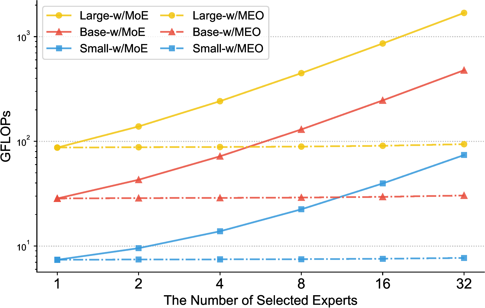

A revolutionary paradigm for Sparse MoE that dynamically merges top-selected expert parameters into a single unified computation path—achieving dense-equivalent inference latency while retaining 100% of multi-expert parameter capacity.
Adjust gating coefficients, toggle expert activations, and observe how MEO merges multiple parameter matrices into a single unified execution path with exact mathematical equivalence and zero dispatch overhead.
Standard Sparse MoE splits token batches across physical expert replicas, creating severe dispatch latency. MEO dynamically fuses the linear transformations before execution.

Figure 1: Comparison between standard MoE and MEO. (Left) Standard MoE dynamically routes tokens to $k$ selected experts, calculates individual expert outputs, and combines them via a gather/scatter dispatcher. (Right) MEO merges the parameters of the $k$ activated experts into a single set of weights ($\mathbf{W}_{ ext{merged}}$) and biases ($\mathbf{b}_{ ext{merged}}$) via gating weights $g_i$, performing a single dense GEMM computation.
Exploits the distributivity of matrix multiplication over addition for linear layers: $$\mathbf{W}_{ ext{merged}} = \sum_{i \in ext{Top-}k} g_i \mathbf{W}_i$$ Allows arbitrary multi-expert combinations to run in a single forward pass.
Completely bypasses SparseDispatcher indexing, sorting, and tensor scatters. Tokens stay contiguous in high-speed GPU SRAM, maximizing Tensor Core compute density.
Introduces a specialized lightweight attention sub-block before token-level gating. Captures rich inter-token context to optimize expert weight allocation dynamically.
Extensive evaluations on GLUE, Machine Translation (WMT'14, WMT'16), and Abstractive Summarization (XSum).

• FLOPs Reduction: Slashes total inference FLOPs from 72.0G down to 28.6G on standard NLP benchmarks.
• Superior Accuracy: Token-level MEO achieves 83.3 on GLUE, exceeding vanilla MoE (82.6) and dense baseline (81.9).
• Translation Superiority: Reaches 28.9 BLEU on WMT'14 En-De with a 1.92× runtime speedup over standard MoE.
| Model Architecture | # Total Experts | Top-$k$ | GLUE Avg | WMT'14 En-De | Inference FLOPs | Inference Latency |
|---|---|---|---|---|---|---|
| Dense Baseline (BERT-base) | 1 | 1 | 81.9 | 27.4 | 22.5G | 1.00× (Base) |
| Standard Switch MoE | 8 | 1 | 82.2 | 27.9 | 22.5G | 1.15× |
| Vanilla Multi-Expert MoE | 16 | 4 | 82.6 | 28.5 | 72.0G | 2.45× (Slow) |
| MEO (Task-level) | 16 | 4 | 82.9 | 28.6 | 26.2G | 1.08× |
| MEO + TokenAtt (Token-level) | 16 | 4 | 83.3 | 28.9 | 28.6G | 1.12× (Fast) |
Get started with MEO in your research workflows with one-line command executions.
# 1. Clone repository
git clone https://github.com/shwai-he/MEO.git
cd MEO
# 2. Setup Conda Environment
conda create -n meo python=3.9 -y
conda activate meo
# 3. Install PyTorch & Dependencies
pip install torch torchvision torchaudio --index-url https://download.pytorch.org/whl/cu118
pip install -r requirements.txt
pip install -e .@inproceedings{he-etal-2023-merging,
title = "Merging Experts into One: Improving Computational Efficiency of Mixture of Experts",
author = "He, Shwai and
Fan, Run-Ze and
Ding, Liang and
Shen, Li and
Zhou, Tianyi and
Tao, Dacheng",
editor = "Bouamor, Houda and
Pino, Juan and
Bali, Kalika",
booktitle = "Proceedings of the 2023 Conference on Empirical Methods in Natural Language Processing",
month = dec,
year = "2023",
address = "Singapore",
publisher = "Association for Computational Linguistics",
url = "https://aclanthology.org/2023.emnlp-main.907",
doi = "10.18653/v1/2023.emnlp-main.907",
pages = "14685--14691"
}